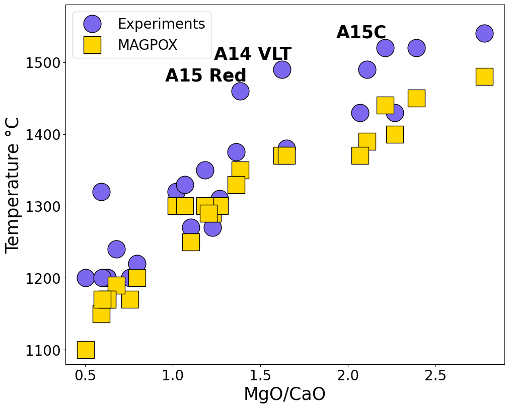

How we used MAGPOX
How MAGPOX works
This is a question that I believe many have asked several times before getting a slight idea of what John Longhi designed this program from. In essence, MAGPOX tries to replicate the behavior of crystallizing melts from a set of phase diagrams and phase relations from known systems. From the composition input, it draws a line in temperature and pressure and returns the conditions and compositions of stable phases all throughout it. However, there is one disadvantage to this program, it is meant for liquids and conditions where olivine is the phase at the liquidus, which means it's limited to Mg-rich compositions at low pressures. Despite this, we know that the modelling will only become unstable once the MSP is reached, so we can still see where it occurs.
So, MAGPOX results can only be reliable at pressures before the MSP at the liquidus is reached and anything beyond it shoud be ignored, especially since it forces olivine as the first appearance and pyroxene is not allowed to form at higher temperatures than the defined olivine curve. Despite this, the program is known for being accurate for the settings it was made for and has been used in many different studies effectively.
The problem
We have already established that for our intentions of finding MSPs, MAGPOX is a plausible tool to use, despite its limitations. It also has the benefit that calculations are almost instant and running multiple samples is computationally inexpensive, so, why do we need to modify it?
To begin with, the method of calculating stability over a single line of pressure and temperature makes it hard to plot complete phase diagrams, as we need several calculations over different conditions to get resolution enough for a basic diagram. The program interface requires either manual input of the entire composition and conditions, or manual confirmation to use a text file that contains all data. To make the process as fast as possible, we had to find a way to remove any manual input.
Additionally, we needed a way to easily get the generated results and combine them in a way where we could construct the phase diagrams. The Fortran output is particularly unfriendly to work with so we had to find a solution to this as well.
Our Solution
Luckily, we had access to the source code, which has been published with Jesse Davenport's SPICES programs, which are ports of the original Fortran programs into MATLAB, which we did not need to use this time. With a little understanding of Fortran, we were able to bypass the manual input directly from the source code and automated the input directly from variables in the Python script, with control over all the required variables within a single function. The end result was processing all 25 compositions in over 300 calculations, completely processed in less than a minute.
Data Processing
The program generates 4 files for any given run containing information about phase composition and stability. This meant that in the end we had over 1200 files to manage and process from which to create our phase diagrams. First we designed a system for file management where we could contain our data in isolated folders for each composition used. Then we modified the results files to change the unfriendly Fortran textfiles into something that we could process through Python. Being able to read the data properly, we then only had to generate an image with the phase relations, which we did initially by using GMT, but then moved to Matplolib. From the phase diagrams we only needed to visually identify the MSP and record the temperature and pressure conditions.
A tool in the shed
MAGPOX, just like with Perple_X and MELTS, their use it is often considered a challenge, if not of as a full project, due to their steep learning curve and difficulties of use. We believe that this needs to change, these programs are incredible tools with an even more incredible potential, and great people went through a titanic effort over decades so that we could have a chance to use them. If we remove their difficulties of use and unify the way we interface to them, we can provide an environment where they can be combined in any way possible with other types of tools to expand their use to as far as creativity can go.
They way I like to think of it is that the 3 programs are equivalent to three hammers of different sizes, designed to hit similar nails but on different contexts. What we have done here is essentially turn these hammers into nail guns, and if we combine them with a woodcutter we will be able to build anything between a chair and a house. How many tools you think we can fit in our shed? What would you like to build? I assure you, it can be done if we keep working on this.
Code and data availability
Data will not be made available until publication.
A full version of the code is available through GitHub Github. An improved version of the code will be released at publication.